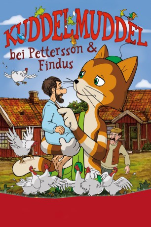

#9573 Kuddelmuddel bei Pettersson & Findus
 
 IMDB-Wertung: 5.9 / 10
IMDB-Wertung: 5.9 / 10  Metascore: 0
Metascore: 0 
Große dürfen immer machen, worauf sie gerade Lust haben, denkt Kater Findus und wünscht sich, zu wachsen. Sein Wunsch wird ihm gewährt, doch Pettersson wird dafür klein, und der Kater muss schnell erkennen, dass groß sein auch Nachteile hat. Und Findus hat plötzlich noch ganz andere Sorgen: Pettersson hat sein Gedächtnis verloren! Nun will er statt seinem Kaffee lieber Tee trinken, und sogar den kleinen Kater hat er vergessen! Mit Geschichten von ihren gemeinsamen Abenteuern versucht Findus, die Erinnerung seines Freundes wieder zurückzuholen.
Jahr: 2009
Dauer: 67 Minuten
FSK: 0
Land: Schweden Studio: Twin FilmTonspuren:
Untertitel:
Auflösung: SD (608x336) Größe: 699 MB
Genre: Animation/Trick, Familie
Regisseur: Jørgen Lerdam, Anders Sørensen
Drehbuch: Torbjörn Jansson, Sven Nordqvist
Soundtrack: Niclas Fransson, Ulf Turesson
Darsteller:
- Tord Peterson als Pettson
- Per Pallesen als Peddersen
- Lukas Emanuel Kraft als Findus
- Lukas Karlsson als Findus
- Lars Knutzon als Gustavsen
- Ann Hjort als Elvira
- Henrik Koefoed als Henrik
- Bente Eskesen als Tulle
- Gunnar Uddén als Gustavsson
Datei: X:\Kinder Collections\Pettersson und Findus\Kuddelmuddel bei Pettersson & Findus (2009, FSK0, 608x336).avi seit 12.09.2018
Festplatte: Kinder-Filme+Trick
 Es gibt insgesamt 8 Filme in der Gruppe 'Kinder Collections\Pettersson und Findus'
Es gibt insgesamt 8 Filme in der Gruppe 'Kinder Collections\Pettersson und Findus'